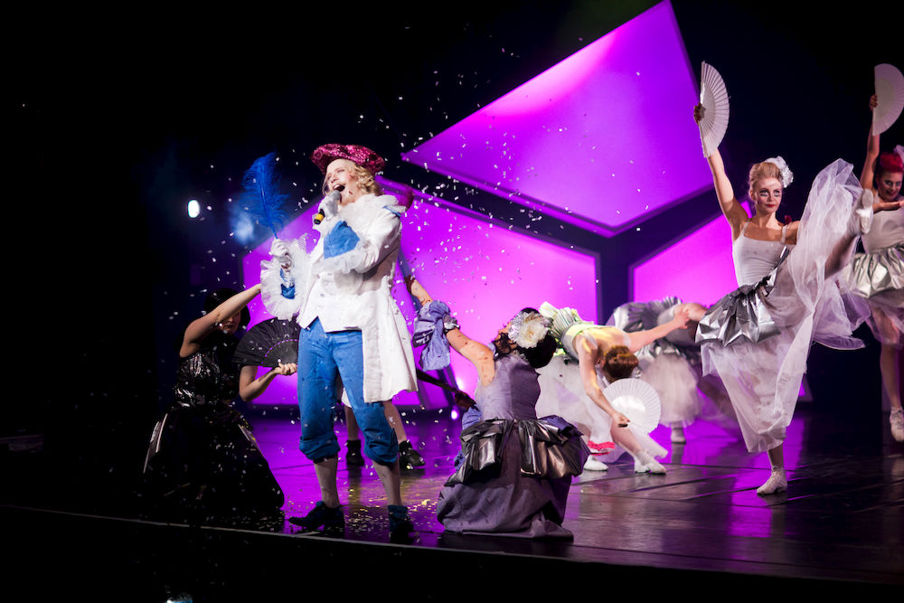

Fuksispeksi TiKkujouluihin!
19.11.2015 fuksit / fuksispeksi / tikkujoulut /
Moikka moi,
joulu tulee, ja niin tulee myös torstaina 3.12. Tietokillan perinteiset TiKkujoulut! Perinteen mukaisesti wanha hallitus vuosimallia 2015 esittää oman speksinsä, jonka jälkeen TE parhaat fuksit saatte vuoronne esittää oman speksinne! Wuu!

OMSTART, MITÄ?
Wikipediasta:
Speksi on interaktiivista musiikki- ja tanssinumeroilla höystettyä opiskelijateatteria. Speksit ovat juurtuneet osaksi korkeakoulujen kulttuuritarjontaa. Suomeen speksin toivat ensimmäisenä 1930-luvulla teekkarit, jotka esittivät speksejä osana tempauksia.
Speksissä yleisö voi ottaa osaa esitykseen huutamalla lavalle "Omstart!". Tämän lisäksi on mahdollista huutaa varsinaisen omstart-huudon perään tarkentavia ideoita siitä, mitä haluaisi näyttämöllä tapahtuvan, esimerkiksi "Omstart, enemmän naurua!". Tällöin speksin interaktiivista traditiota kunnioittava speksiteatteri reagoi huutoon ottamalla äskeiset tapahtumat uudestaan niitä jotenkin varioiden, tarkempien ideoiden tapauksessa uusia ideoita mahdollisuuksien mukaan toteuttaen.
Teekkarispeksin perinne elää vahvana teekkareissa ja tätä myöten on myös hyvä tietää, mitä speksiin periaatteessa kuuluu. Lisäksi speksin tekeminen on ihan älyttömän hauskaa alusta loppuun, ja siinä saa tehdä mitä haluaa käsikirjoituksesta tanssiin, näyttelyyn tai vaikkapa lavastamiseen ja jopa yrityssuhteisiin liittyen. Kannattaa siis lähteä mukaan!
Maanantaina klo 15:45 järjestän speksi-infon, jossa pääsette kuulemaan kuinka tehdä hyvä speksi. Lisätietoa infosta löytyy killan sivuilta osoitteesta https://tietokilta.fi/tapahtumat/869. Tulkaa kuulemaan fuksispeksin tekemisestä ja tehkää huikea fuksispeksi TiKkujouluihin! Voin luvata, perinteisesti hallituksen speksiä ei ole vaikea päihittää. :D
TiKKujoulut Facebookissa: https://www.facebook.com/events/1763636423863773/
Nähdään maanantaina klo 15:45 speksi-infossa!
<3 ultsi